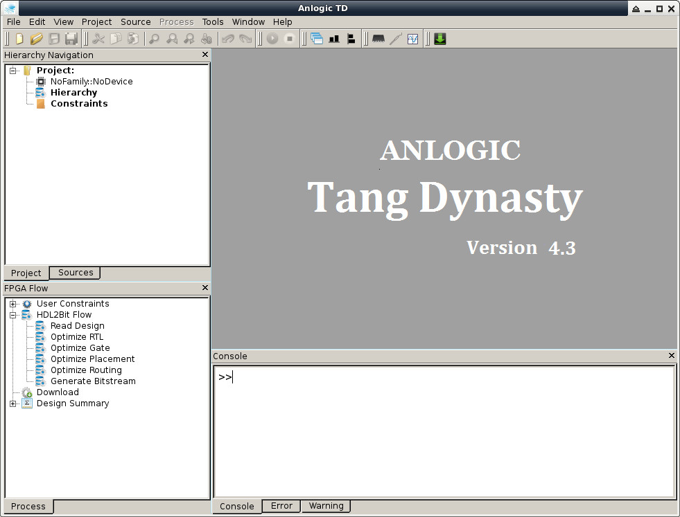

$ cd $ wget https://github.com/steward-fu/website/releases/download/lichee-tang/TD1812_linux.rar $ wget https://github.com/steward-fu/website/releases/download/lichee-tang/Anlogic_20190822.lic $ unrar x TD1812_linux.rar $ cp Anlogic_20190822.lic TD_RELEASE_DECEMBER2018_GOLDEN_RHEL/license/Anlogic.lic $ chmod a+x ./TD_RELEASE_DECEMBER2018_GOLDEN_RHEL/bin/td $ sudo mv TD_RELEASE_DECEMBER2018_GOLDEN_RHEL /opt/td $ /opt/td/bin/td -gui
